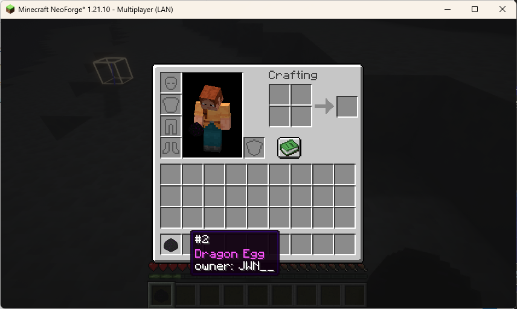

JWN's So many dragon eggs Mod
개요
엔더드래곤을 잡으면 드래곤 알을 얻습니다.
버전 정보
- NeoForge 전용
- 마인크래프트 버전: 1.21.10 (NeoForge 버전 21.10.63 이상)
상세
* 2025. 12. 27. Last Updated드래곤 알
드래곤 알은 기본적으로 첫번째 드래곤을 잡았을 때에만 엔더의 출구 차원문 상단에 생성됩니다. 이 모드는 더 이상 이러한 방식으로 드래곤 알을 생성하지 않습니다. 대신, 드래곤을 잡을 때마다 '마지막으로 드래곤에게 공격을 가한 플레이어'에게 드래곤 알을 지급합니다.  월드에서 몇번째로 드래곤을 잡았는지, 누가 마지막으로 공격을 가했는지를 확인할 수 있습니다.
버전 기록
0.0.1
- 기본 기능 구현 완료
자료실
jwnssomanydragoneggs-0.0.1 jwnssomanydragoneggs-0.0.1 * Click to download또는 git clone 이후 직접 ./gradlew build해도 됨